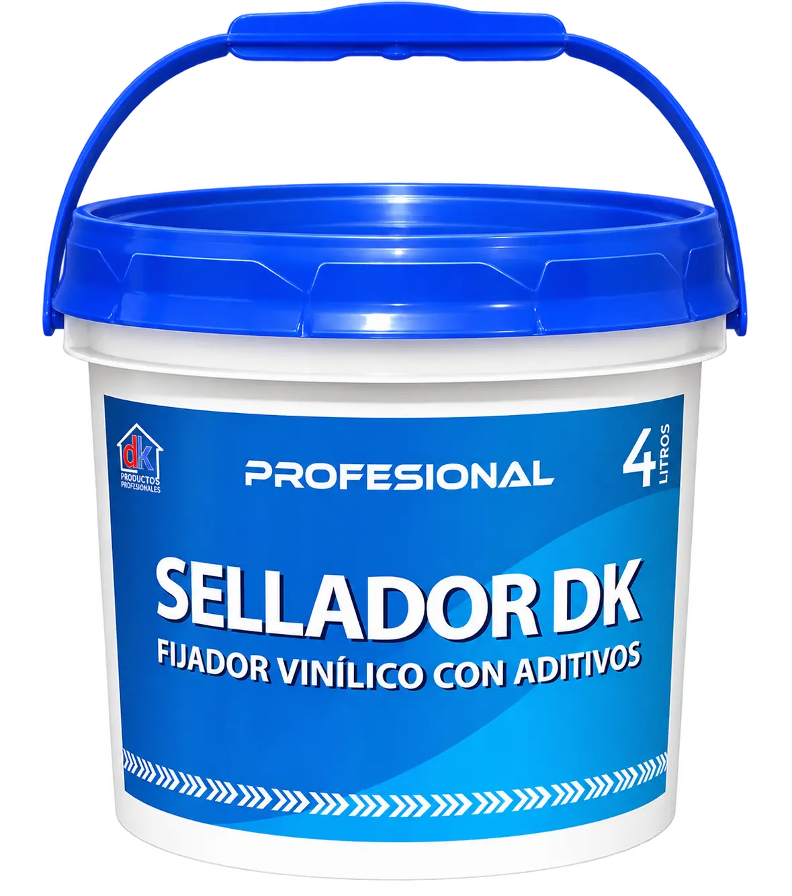

Preparación y fijación
Sellador Dekora
Producto en base acuosa, formulado a base de resina látex vinil-acrílica y aditivos de calidad. Fija la superficie después del lijado o empastado y la deja lista para recibir el acabado final.
Usos
- Paredes nuevas, después de imprimarlas.
- Paredes con pintura antigua, después de lijar.
- Aplicación en interiores y exteriores.
Datos técnicos
- Acabado: Semi-mate.
- Color: Blanco-transparente.
- Sólidos en volumen: 14 % ± 2 %.
- Rendimiento teórico: 30–36 m² por mano x 4 L.
- El rendimiento real depende de las condiciones de aplicación y del estado de la superficie.
- Diluyente: Agua potable.
Preparación de superficies
- En superficies con pintura en mal estado, humedecer y retirar con espátula la pintura mal adherida; dejar libre de polvo y aplicar Sellador Dekora.
Método de aplicación
- Brocha o rodillo.
Aplicación
- La superficie debe estar libre de suciedad, grasa, aceite, pintura suelta, humedad y cualquier otro material extraño. La brocha o rodillo deben encontrarse en buen estado. Agitar hasta homogenizar. Aplicar una capa delgada y uniforme, sin recargar. Después de 4 horas de secado, aplicar otra capa si se requiere o continuar con la capa de acabado.
Precauciones de seguridad
- El uso o manipuleo inapropiado puede ser nocivo para la salud. Trabajar con adecuada ventilación y mantener fuera del alcance de los niños.